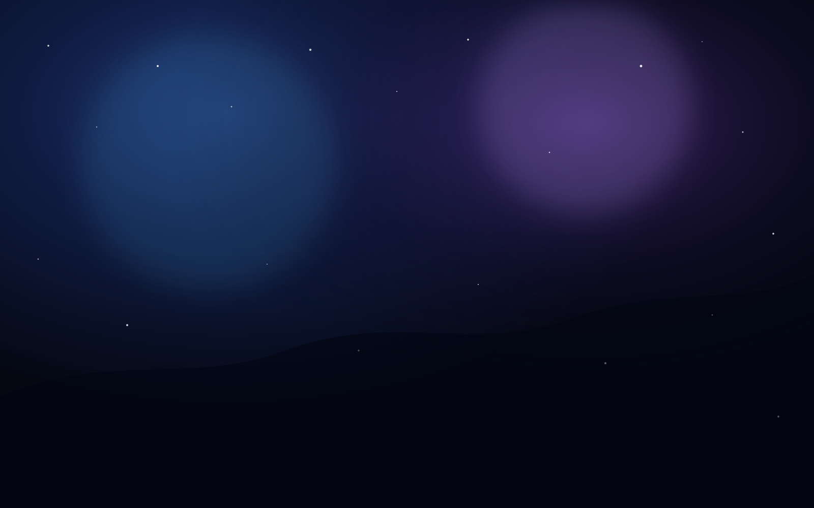

foto 01
O primeiro instante
uma lembrança para guardar com calma

experiência secreta
um lugar onde o que sentimos ainda existe
entrada silenciosa
Algumas coisas só o coração reconhece.
porta aberta
Algumas portas só se abrem quando ainda existe sentimento do outro lado.
memórias suspensas
Substitua os blocos abaixo pelas suas fotos quando quiser. Cada card já está preparado para imagem, legenda e uma frase escondida no hover.
uma lembrança para guardar com calma
a luz certa, a pessoa certa
pequenas cenas que ficaram
um recorte do que continua vivo
ritual emocional
Responda com o coração. O Refúgio não calcula números: ele interpreta sinais.
frequência do refúgio
O som só começa quando você escolhe entrar. Nada aqui força o sentimento: ele só convida.
final interativo
Passe o mouse pelas lembranças para revelar frases escondidas. Depois, desbloqueie a carta final se quiser ir mais fundo.
um lugar que virou memória
um abraço guardado
uma noite no nosso céu
cena final
o resto ainda está sendo escrito por nós dois